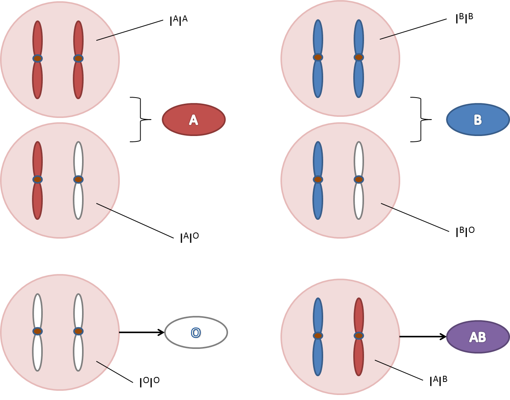
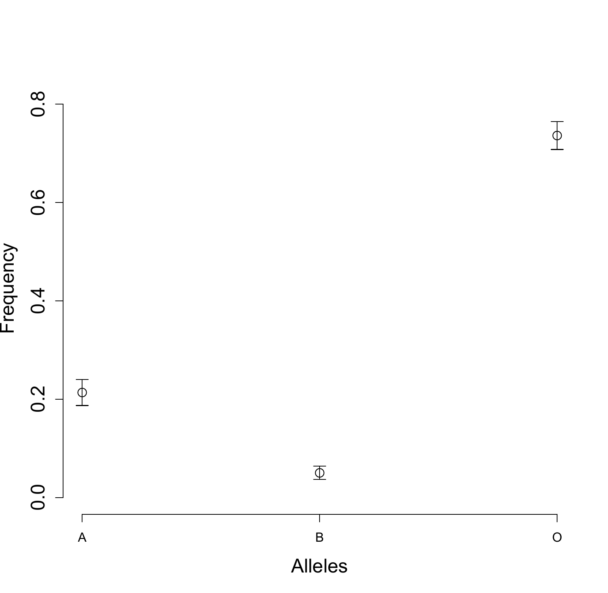

2.1 The EM construction
The EM algorithm replaces a difficult observed-data optimization by a sequence of complete-data calculations. The missing data may be literally unrecorded values or latent variables introduced to simplify a model. What matters is that the completed problem is easier and that its conditional distribution, given the observations and a current parameter value, can be evaluated.
There are two different parameter roles in \(Q(\theta\mid\theta^{(j)})\). The argument \(\theta\) is varied in the M step, while \(\theta^{(j)}\) is held fixed in the distribution used to take expectations. Confusing those roles would turn the M step into a different operation. Deriving the complete-data score first is often useful, although an M step must still find a maximizer rather than an arbitrary score root.
The bivariate normal example in Chapter 1 illustrates the two operations that define EM. At iteration \(j\), use the current parameter \(\theta^{(j)}\) to determine the conditional distribution of the missing values, and take the conditional expectation of the complete-data log likelihood:
The resulting function retains the candidate argument \(\theta\). The M step varies that argument while holding the conditional distribution from the E step fixed:
Thus one distribution supplies the averaging and one optimization supplies the update. Keeping those two roles separate is the key to deriving an EM algorithm correctly.
It is often convenient to derive the complete-data score before calculating the E step. Write \(\dot l(D;\theta)=\partial l(D;\theta)/\partial\theta\). When differentiation and conditional expectation can be interchanged,
an interior M-step solution satisfies the expected-score equation
The score omits terms that do not depend on the candidate parameter, so its conditional expectation can be simpler to calculate than that of the full log likelihood. This simplification does not change the optimization requirement: a score root must still be checked to ensure that it gives the intended maximum.
The idea of computing \(E\{\dot l_n(D;\theta)\mid D_{\mathrm{obs}};\theta^{(j)}\}\) is to replace the unobserved terms in the full-data score function with the best estimates possible given the observed data and the current “guess” of the true parameter. When the data consist of \(n\) independent observations, the conditional score function is
where \(\dot l(Y;\theta)\) is the score function for a single observation \(Y\). When the missing mechanism is MAR, this previous display is
Under the ignorability conditions for MAR, the conditional distribution used in the E step comes from the data model alone; the response-mechanism factor drops out. The construction also applies to observations more general than a subvector of \(Y\). Any recorded quantity of the form
with a noninvertible map \(M\) contains partial information about the full observation. Censoring, grouping, and latent-class observations all fit this description. The next example makes this coarsening explicit: an observed blood type can be compatible with more than one underlying genotype.
2.2 Allele frequencies from blood types
Blood-type data provide a particularly transparent example because the unobserved genotypes take only finitely many values. The observed phenotype identifies some genotypes exactly and merges others. In the E step we divide each ambiguous phenotype count among compatible genotypes according to conditional probabilities. In the M step we estimate allele frequencies as if these fractional genotype counts were observed.
A phenotype is an observable characteristic, while a genotype describes the alleles at the relevant genetic locus. In the simplified diploid setting used here, each subject carries two alleles, one on each chromosome of a homologous pair; humans ordinarily have 23 such chromosome pairs. Different allele combinations can produce the same phenotype. Consequently, when only the phenotype is measured, the genotype is latent even though the subject has a definite genotype. The statistical problem is to recover population allele frequencies from the coarser phenotype counts.
Different genotypes may lead to the same phenotype, so there is a coarsening of information from genotype to phenotype. A simple and classic example of single-gene-controlled phenotypes is human blood type. The locus controlling blood type resides on chromosome 9 at band q34, and it controls blood type by determining the antigens on the surface of the red blood cells. There are three alleles, A, B, and O, which are responsible for generating antigen A, antigen B, and no antigen, respectively. So, alleles A and B are “co-dominant” and O is “recessive” (see Figure 2.1), giving rise to four blood types A, B, AB, and O.
{kind=link}

But there are 6 genotypes, \(AA, AO, BB, BO, AB, OO\). \(AA\) and \(AO\) lead to blood type \(A\); \(BB\) and \(BO\) to blood type \(B\); \(AB\) and \(OO\) correspond to blood types \(AB\) and \(O\), respectively. Under the assumption of infinite population size and random mating, the occurrences of the alleles in each person can be considered independent (Hardy-Weinberg Law). So, if we denote the population frequency of alleles \(A, B\), and \(O\), as \(p_A, p_B\), and \(p_O\), respectively, then
Suppose we have a random sample of \(n\) subjects, among which \(n_A, n_B, n_{AB},\) and \(n_O\) are observed to have blood types \(A, B, AB\), and \(O\), respectively. We want to estimate the allele frequencies \(\theta:=(p_A, p_B, p_O)\). Suppose, instead of the phenotype data \(D_{\mathrm{obs}}:=(n_A, n_B, n_{AB},n_O)\), we had observed the counts for each genotype \(D:=(N_{AA},N_{AO},N_{BB},N_{BO},N_{AB}, N_{OO})\), where
By the Hardy-Weinberg assumption of independent mating, the genotype data \(D\) is equivalent to a random sample of \(2n\) alleles, with observed counts \(2N_{AA}+N_{AO}+N_{AB}\), \(2N_{BB}+N_{BO}+N_{AB}\), and \(2N_{OO}+N_{AO}+N_{BO}\). for alleles \(A\), \(B\), and \(O\), respectively. Hence, the MLEs for \(\theta\) would be
However, since we do not observe the \(N\)s, we might want to replace the numbers with their corresponding estimates based on the observed phenotype data. For example, the population fraction of genotype \(AA\) within the population of blood type \(A\) is
So we should replace \(N_{AA}\) with
Similarly for the other \(N\)s.
The problem is that the “estimated” genotype frequencies contain the unknown parameters. This suggests using an iterative scheme, where at the \((j+1)\)th iteration, one computes
The expected genotype counts in the updates are obtained by allocating each ambiguous blood-type count among its compatible genotypes. For blood type A, the allocations are
and the corresponding allocations for blood type B are
Each pair sums to its observed phenotype count. More compactly, the vector of reconstructed counts is the conditional expectation
This identifies the reconstruction as the E step. To complete the argument, the M step must use these conditional means in precisely the places where the complete-data likelihood depends on the genotype counts.
To verify that these fractional counts define an E step, it remains to examine how the complete-data score depends on the genotype counts \(N\). The multinomial log likelihood is linear in those counts, and differentiation with respect to the allele frequencies preserves that linearity. Conditional expectation can therefore be applied simply by replacing each count with its conditional mean. The explicit calculation below both proves this claim and explains why allocating an ambiguous phenotype to a single genotype would give a different algorithm.
To complete the score argument, collect the allele counts as \(C_A=2N_{AA}+N_{AO}+N_{AB}\), \(C_B=2N_{BB}+N_{BO}+N_{AB}\), and \(C_O=2N_{OO}+N_{AO}+N_{BO}\). Up to a parameter-free term,
The score with respect to \((p_A,p_B)\) is \((C_A/p_A-C_O/p_O,\ C_B/p_B-C_O/p_O)^{\mathrm{T}}\), which is linear in the complete genotype counts. Replacing the counts by their conditional expectations therefore gives the exact E step. Since \(C_A+C_B+C_O=2n\), maximizing the conditional log likelihood yields the updates already displayed. Here \(n_{OO}=n_O\), because blood type O determines genotype OO.
Clarke et al. (1959) considered the blood types of 521 duodenal ulcer patients, with \(n_A=186, n_B=38, n_{AB}=13\), and \(n_O=284\). Use the EM algorithm
| Iteration \(j\) | \(p_A^{(j)}\) | \(p_B^{(j)}\) | \(p_O^{(j)}\) |
|---|---|---|---|
| 0 | .3000 | .2000 | .5000 |
| 1 | .2321 | .0550 | .7129 |
| 2 | .2160 | .0503 | .7337 |
| 3 | .2139 | .0502 | .7359 |
| 4 | .2136 | .0501 | .7363 |
| 5 | .2136 | .0501 | .7363 |
It appears that convergence occurs quickly.
The numerical iteration can be reproduced without specialized software:
nA <- 186; nB <- 38; nAB <- 13; nO <- 284
n <- nA + nB + nAB + nO
p <- c(A=.3, B=.2, O=.5)
for (j in seq_len(10000)) {
AA <- nA * p[1]^2 / (p[1]^2 + 2*p[1]*p[3])
AO <- nA - AA
BB <- nB * p[2]^2 / (p[2]^2 + 2*p[2]*p[3])
BO <- nB - BB
next_p <- c(2*AA + AO + nAB,
2*BB + BO + nAB, 2*nO + AO + BO)/(2*n)
change <- max(abs(next_p - p))
p <- next_p
if (change < 1e-10) break
}
pThese are fractional expected counts, not a classification of each patient into a single genotype. A hard assignment would discard uncertainty and would not be this EM algorithm.
2.3 Finite normal mixtures
A mixture model introduces a missing class label for every observation. Conditional class probabilities play the same role as conditional genotype probabilities. The resulting M step is a collection of weighted normal fits. The interpretation of the weights changes with the model, but the underlying conditional-expectation calculation is identical.
The missing data framework here applies to latent variable models, and so does the EM algorithm. Here we give a simple example. Suppose we observe a continuous outcome \(X\), whose distribution is multi-modal. A popular model for multi-modal distribution is the normal mixture model. Suppose there is a latent categorical variable \(G=1,\cdots, K\), where \(K\) is fixed, indicating the underlying classes of normal distribution, and
where \(\theta=\{(p_k,\mu_k,\sigma_k^2)\), \(k=1,\cdots, K\}\) consists of unknown parameters.
The (marginal) density of \(X\) is
where \(f(X;\mu_k,\sigma_k^2)=\sigma_k^{-1}\phi\left(\frac{X-\mu_k}{\sigma_k}\right)\). Given a random sample \(X_1, \cdots, X_n\), it is hard to find the MLE of \(\theta\) directly based on \(\sum_{i=1}^n\log p_X(X_i;\theta)\). So we try the EM algorithm with imagined full data \((X,G)\), whose density is
So the log-likelihood of \(\{(X_i,G_i):i=1,\cdots,n\}\) is
Hence, we only need to compute \(E[I(G=k)\mid X;\theta]\) at the E step.
So, at the \((j+1)\)th iteration,
where \(w_{ki}^{(j)}=E[I(G_i=k)\mid X_i;\theta^{(j)}]\). For the M step, after straightforward derivation that completely parallels that of MLEs for multinomial and Gaussian data, we have
For the E step, we compute
This wraps up the EM algorithm for normal mixture models.
Mixture fitting also illustrates the limits of EM. Relabeling components leaves the mixture density unchanged. With unconstrained component variances, a normal-mixture likelihood can be unbounded when one component collapses onto one observation. In practice, initialization, variance constraints or penalties, and checks for near-empty components are part of the model-fitting problem. Monotone likelihood improvement alone does not establish that a meaningful global maximum has been found.
2.4 Why EM increases the likelihood
The ascent argument compares two distributions for the missing data conditional on the same observed record. Their discrepancy is a Kullback–Leibler divergence. Jensen’s inequality makes that discrepancy nonnegative and provides a lower-bound interpretation of the E step. The calculation below proves likelihood ascent; it should not be read as a proof that the iterates converge to a global maximizer.
The essence of the EM algorithm is that maximizing \(Q(\theta\mid \theta^{(j)})\) leads to an increase in the observed-data log-likelihood \(l_n(D_{\mathrm{obs}};\theta)\). This assertion is proved in the this theoretical section. The entropy (or information) inequality at the heart of the EM algorithm is a consequence of Jensen’s inequality.
Proposition 2.1 (Jensen’s Inequality). Let \(Y\) be a random variable with values in a possibly infinite interval \((a,b)\). If \(h(Y)\) is convex on \((a,b)\), then \(E[h(Y)] \geq h[E(Y)]\). For a strictly convex function, equality holds in Jensen’s inequality if and only if \(Y= E(Y)\) almost surely.
Proposition 2.2 (Entropy Inequality). Let \(f\) and \(g\) be probability densities with respect to a measure \(\mu\). If \(E_f\) denotes expectation under density \(f\), then,
\[E_f\log\left(\frac{g}{f}\right) \leq 0,\]with equality only if \(f = g\) almost everywhere relative to \(\mu\).
Proof. The function \(h(x)=-\log x\) is strictly convex on \((0,\infty)\). We apply Proposition 2.1 to the random variable \(g/f\):
Denote \(L(D;\theta)\) and \(L(D_{\mathrm{obs}};\theta)\) as the full data likelihood and the observed data likelihood, respectively. We want to show that each EM step increase the log-likelihood of the observed data, i.e.,
Recall that
Consequently,
Note that
is the conditional density of \(D\) given \(D_{\mathrm{obs}}\) under \(\theta\). By Proposition 2.2,
Since inequality (\(\ref{eq:qiq}\)) holds for all \(\theta\), take \(\theta=\theta^{(j+1)}\) and we have
Because by definition \(Q(\theta^{(j+1)}|\theta^{(j)})\geq Q(\theta^{(j)}|\theta^{(j)})\), we have the result
More explicitly, let \(q_j(z)=p(z\mid D_{\mathrm{obs}};\theta^{(j)})\). Then
Thus merely increasing \(Q\) suffices to increase \(\ell_o\); an exact maximization is not necessary for a generalized EM step. A bounded increasing sequence of likelihood values converges, but convergence of parameter iterates needs further regularity and control of the parameter space. At a candidate solution, inspect the observed score, information matrix, boundary behavior, and sensitivity to starting values.
2.5 Observed information and the Louis identity
An algorithm that estimates a parameter has not yet supplied its uncertainty. The curvature of the complete-data criterion treats the missing values as known and is usually too optimistic. Louis’s identity subtracts the conditional variability of the complete-data score. The derivation that follows shows why this is precisely the information lost through coarsening.
One initial criticism of the EM algorithm was that it does not automatically provide an estimate of the covariance matrix of the MLE, as do some other methods, such as Newton-Raphson type methods. We know from asymptotic likelihood theory, that when the sample size \(n\) is large
where \(\mathcal I(\theta)\) is the Fisher information. The Fisher information is the expectation of the observed information, which is the negative Hessian of the log-likelihood. Because the EM algorithm does not directly provide the correct information matrix at convergence, a variety of methods have been proposed for obtaining the asymptotic covariance matrix of the MLE.
The observed information matrix in missing data problems, \(I(\theta; D_{\mathrm{obs}})\), can be found directly by differentiating the log-likelihood \(\log L(D_{\mathrm{obs}};\theta)\) twice w.r.t. \(\theta\). However, this approach is not always practical since the likelihood of the observed data may be difficult to find. Louis (1982) proposed a method of obtaining the observed information matrix directly from quantities calculated in the EM algorithm. For simplicity, denote the missing part of the data as \(D_{\mathrm{mis}}\). So, \(D=(D_{\mathrm{obs}}, D_{\mathrm{mis}})\).
Observe that the full data likelihood can be written as
Consequently,
Differentiating both sides of the equation twice with respect to \(\theta\) yields
where \(I(D;\theta)\) is the full-data information, and
represents missing-data information.
So, the above equation can be interpreted as
Taking conditional expectation of both sides given \(D_{\mathrm{obs}}\), we have
The first term on the right hand side of (\(\ref{eq:info}\)) can be estimated by
Louis (1982) showed that the missing information, represented by the negative of the second term on the right hand side of (\(\ref{eq:info}\)), can be estimated by
where \(\dot l_n(D_{\mathrm{obs}};\theta)\) is the observed-data score function. At the MLE \(\widehat\theta\), \(\dot l_n(D_{\mathrm{obs}};\widehat\theta)=0\). Therefore, the observed-data information can be estimated by
where
So the first term of \(I(D_{\mathrm{obs}};\widehat\theta)\) can be computed based on the \(Q\) function. The second term is not a byproduct of the EM algorithm. In the iid case,
Consequently,
where
Note that
since
. In conclusion,
At any parameter value for which differentiation under the integral is justified, write \(S_c=\partial\ell_c/\partial\theta\) and \(I_c=-\partial^2\ell_c/\partial\theta\partial\theta^{\mathrm{T}}\). Then
This form avoids a common implementation error: the conditional second moment of the score and the outer product of its conditional mean are different quantities. For independent subjects the conditional variances add. At an interior MLE the total observed score is zero, but individual observed scores generally are not. The final sum of individual outer products in the Louis formula must therefore be retained.
2.6 Standard errors for allele frequencies
To put this example into iid framework, let \(Y\in\{AA,AO,BB,BO,AB,OO\}\) be the full genotype data for one individual. The full data log-likelihood for \(\theta=(p_A, p_B)^{\mathrm{T}}\) is
where \(f_{AA}(\theta)=\log p_A^2, f_{AO}(\theta)=\log 2p_A(1-p_A-p_B)\), \(f_{BB}(\theta)=\log p_B^2\), \(f_{BO}=\log 2p_B(1-p_A-p_B)\), \(f_{AB}(\theta)=\log 2p_Ap_B\), and \(f_{OO}(\theta)=\log (1-p_A-p_B)^2\).
Consequently,
Note that the square of \(\dot l(Y;\theta)\) has a simple form
Let \(Y_{\mathrm{obs}}\in\{A,B,AB,O\}\) denote the observed blood type data. In the E step, we have calculated the conditional probabilities of \(Y\) given \(Y_{\mathrm{obs}}\). In particular, define \(w_A(\theta)=\frac{p_A^2}{p_A^2+2p_Ap_O},\) and \(w_B(\theta)=\frac{p_B^2}{p_B^2+2p_Bp_O}\). Then, we have
Consequently,
Similarly,
And,
The variance of \(\widehat\theta\) can be computed using the Louis formula (\(\ref{eq:louis}\)). See A2.1 for details.
For completeness, the derivatives referred to in the lecture can be computed from six coefficient vectors. Let \(v_g=(a_g,b_g,o_g)\) be \((2,0,0)\) for AA, \((1,0,1)\) for AO, \((0,2,0)\) for BB, \((0,1,1)\) for BO, \((1,1,0)\) for AB, and \((0,0,2)\) for OO. With \(p_O=1-p_A-p_B\),
Substitution into the conditional sums gives a \(2\times2\) observed information matrix. Invert it for the covariance of \((\widehat p_A,\widehat p_B)\). For the third frequency, the delta method gives
. The same calculation therefore provides uncertainty estimates for all three allele frequencies.
We perform some numerical studies to assess the EM and Louis formula. Set \(p_A=0.7\), \(p_B=0.2\), and \(p_O=0.1\), and generate data under the Hardy-Weinberg Law.
| \(p_A\) | \(p_B\) | |||||||||
| \(n\) | Est | SE | SEE | CP | Est | SE | SEE | CP | ||
| 100 | 0.705 | 0.045 | 0.044 | 0.948 | 0.201 | 0.029 | 0.030 | 0.948 | ||
| 200 | 0.702 | 0.032 | 0.031 | 0.939 | 0.200 | 0.021 | 0.021 | 0.946 | ||
| 500 | 0.701 | 0.020 | 0.020 | 0.938 | 0.200 | 0.013 | 0.013 | 0.948 | ||
Est and SE are the empirical means and standard error of the parameter estimator; SEE is the empirical average of the standard error estimator; CP is the empirical coverage probability of the 95% confidence interval. Each entry is based on 2,000 replicates.
{kind=link}

2.7 Coarsening and exponential families
The finite examples can be organized around sufficient statistics. In a canonical exponential family the complete-data score is linear in \(t(Y)\). Consequently the E step needs only \(E\{t(Y)\mid O\}\), while the information calculation additionally needs its conditional second moment. This is why an EM algorithm can be simple even when the observed likelihood has an awkward integral or sum.
To make our framework more general so as to allow for coarsening of data (Example 1) as well as actually missing values, we introduce, for the \(i\)th subject, the (random) \(M_i\) representing the “coarsening” pattern, so that the coarsened data is
For example, if full data \(Y_i=(Y_{i1},Y_{i2})^{\mathrm{T}}\), and the observed data are \((R_i,Y_{i1},R_iY_{i2})\), then
where \(f_1(y)=y\) and \(f_0(y)=y_1\) for \(y=(y_1,y_2)\). So there are two possible coarsening patterns \(f_1\) and \(f_0\), which represent no coarsening at all and extracting the first element, respectively.
In Example 1, \(M_i\) is the (fixed) function
The representation of observed data as \(\{M_i, Y_{i,\mathrm{obs}}:=M_i(Y_i)\}\) also allows each subject to have a different coarsening pattern.
Under this framework, suppose there are \(K\) levels of coarsening pattern, i.e., \(M\in\{m_1,\cdots, m_K\}\). Denote the coarsening mechanism by
The familiar classifications of missing data based on missingness mechanism can be easily extend to the coarsened data as follows: MCAR: \(M\perp\!\!\!\perp Y\), i.e., the \(\pi_k(y)\) are constants
MAR: \(M\perp\!\!\!\perp Y\mid M(Y)\), i.e., \(\pi_k(y)\) is only a function of \(m_k(y)\)
NMAR: \(M\) is not independent of \(Y\) even given \(M(Y)\), i.e., at least one \(\pi_k(y)\) depends on elements of \(y\) other than \(m_k(y)\).
The exponential family of statistical models encompass the most commonly used models such as the normal, binomial/multinomial, Poission, and etc.. A model belongs to the exponential family if its desnity can be parameterized as
where \(\theta\) is called the canonical parameter, \(t(\cdot)\) and \(b(\cdot)\) are functions of \(Y\), and \(a(\theta)\) is the normalizing constant for density under \(\theta\). So, the score function is
Based on an iid sample of \(n\) subjects, the score function is
So, inference of \(\theta\) is solely based on \(\sum_i^nt(Y_i)\), which is hence termed the sufficient statistic. With full data, the MLE solves
using possibly the Newton-Raphson algorithm. With coarsened data \(D_{\mathrm{obs}}=\{(M_i,M_i(Y_i))\), \(i=1,\cdots,n\}\), the M step for the EM algorithm closely mimics the MLE for full data.
Observe that the full data score function is linear in the sufficient statistic, so, at the \((j+1)\)th iteration, the M step solves
where in general
and under MAR
We can also derive a general expression for the variance estimator of the MLE \(\widehat\theta\) with coarsened data using Louis formula.
Assuming MAR, denote
Using the Louis formula (\(\ref{eq:louis}\)), an estimator for the observed data information is
In fact, it is easily seen that the missing information for the \(i\)th subject
So the missing information is due to the extra variability of the sufficient statistic \(T(Y)\) unaccounted for by \(M(Y)\). It may very well happen that the canonical parameter is not directly in the form of the parameter of interest. If the parameter of interest is \(\psi\) and the canonical parameter \(\theta\) can be expressed as \(\theta(\psi)\). Then the information of \(\psi\) can be estimated by
For vector sufficient statistics, expand outer products with both cross terms: \((t-a)(t-a)^{\mathrm{T}}=tt^{\mathrm{T}}-ta^{\mathrm{T}}-at^{\mathrm{T}}+aa^{\mathrm{T}}\). The dimensionally explicit result is
For a smooth one-to-one reparameterization \(\theta=\theta(\psi)\), the Jacobian transformation of observed information shown above holds at a stationary point; away from it, second derivatives of the transformation produce additional score terms.
2.8 Grouped multinomial observations
Consider the multinomial data \(Y=k\) with probability \(p_k\), \(k=1,\cdots, K\), where \(\sum_{k=1}^K p_k=1\). The log-likelihood of \(Y\) is
where \(\theta=(\theta_1,\cdots,\theta_{K-1})^{\mathrm{T}}\), \(\theta_k=\log(p_k/p_K)\), and \(T=(I(Y=1),\cdots,I(Y={K-1}))^{\mathrm{T}}\).
To get back to \(p:=(p_1,\cdots, p_{K-1})^{\mathrm{T}}\) from \(\theta\), note that
and \(p_K=\left(1+\sum_{k=1}^{K-1}e^{\theta_{k}}\right)^{-1}\). In this case,
and it is easily shown that
where \(e^{\theta}=(e^{\theta_1},\cdots,e^{\theta_{K-1}})\).
Hence, the full data score function is
So, the M step for the \((j+1)\)th iteration of EM algorithm with incomplete data is as follows:
where
The E step (computation of the \(\widehat T_i^{(j)}\)), of course, depends on the specific coarsening patterns and mechanism.
Here we consider a grouping scenario that frequently occurs to multinomial data. Assume that the \(K\)-level data \(Y\) are grouped into \(L\) categories, where \(L<K\). Specifically, define a many-to-one function \(m: \{1,\cdots, K\}\to\{1,\cdots, L\}\) representing the grouping pattern. For example, Levels 1, 2, and 3 are grouped into Group 1; Levels 4 and 5 to Group 2, and so on. Assume that this pattern occurs at random (MAR), that is, the probability of being coarsened (grouped) depends only on the group. In other words, all levels within a group have the same probability of being grouped.
Further, in order to identify the full \((K-1)\) vector \(p\), we have to assume that for each level, there is a positive probability of not being grouped. If otherwise, say, levels within \(m^{-1}(l_0):=\{k:m(k)=l_0,k=1,\cdots,K\}\) are always grouped (into the new level \(l_0\)), then we can only identify the probability of Group \(l_0\), which is \(\sum_{k\in m^{-1}(l_0)} p_k\), not those of the individual levels, if more than one, within it. These assumptions guarantee that vector \(p\) is identifiable by Proposition 1.1.
Under the current formulation, there are two coarsening patterns, one is no grouping, the other grouping by the rule \(m(\cdot)\). So we use a binary random variable \(R\in\{0,1\}\) define the random coarsening pattern
where \(m_0(y)=y\) is the identity function. Thus, the \(k\)th component of \(\widehat T_i^{(j)}\) is
where \(\mathcal C_l=m^{-1}(l), l=1,\cdots, L\).
Now, define
as the count in the \(k\)th level among the ungrouped, and
as the count in the \(l\)th group among the grouped. Then, the M step can be expressed as
The Louis information calculation follows below.
The information calculation for the grouped multinomial example is also explicit. Use \(T=(I(Y=1),\ldots,I(Y=K-1))^{\mathrm{T}}\) and let \(q_i=E(T_i\mid O_i)\) under the fitted probabilities. For an ungrouped record the conditional covariance is zero. For a grouped record,
where a category outside the compatible group receives zero probability. The full-data information in canonical coordinates is \(\operatorname{diag}(p)-pp^{\mathrm{T}}\) per subject. Hence
If all records merge the same categories, the resulting information may be singular, reflecting the identification limitation already discussed.
2.9 Regression with missing covariates
Consider the usual linear regression model:
where \(\beta=(\beta_1,\beta_2^{\mathrm{T}})^{\mathrm{T}}\) are regression parameters, \(Z=(Z_1,\cdots, Z_p)^{\mathrm{T}}\) are the covariates, and \(\epsilon\sim N(0,\sigma^2)\) is the random error independent of \(Z\). Suppose the full data are \((Y_i, Z_i), i=1,\cdots, n\). In the observed data, some components of the \(Z_i\) are missing at random, so we observe \((M_i, M_i(Z_i))\) The full data likelihood can be expressed as
where \(p(Y\mid Z;\beta,\sigma^2)\) is the conditional density of \(Y\) given \(Z\) and \(\eta(Z)\) is the density of \(Z\).
Because of factorization, inference on \((\beta,\sigma^2)\) can be based on
regardless of \(\eta\), which can thus be left totally nonparametric. However, the density of observed data with missing covariates is (proportional to)
So \(\eta\) gets entangled with the parameters of interest. In order to do MLE, we have to build a model for \(Z\). We discuss two scenarios: (1) \(Z\) is multivariate normal; (2) \(Z\) is categorical (i.e., consists of binary indicators).
2.10 Continuous covariates
The distinction between a missing response and a missing covariate now becomes decisive. With a missing response and observed covariates, the conditional response density integrates to one. With a missing covariate, both the response density and the covariate density participate in the integral. The response therefore helps predict the missing covariate, and an E step that conditions only on the other covariates generally uses the wrong conditional law.
Let \(Z\sim N(\mu,\Sigma)\). Clearly, \((Y, Z^{\mathrm{T}})^{\mathrm{T}}\) is multivariate normal:
So this time the conditional expectation, conditional variance and covariance of any components of \(Z\) given \(Y\) and other elements of \(Z\) have closed-form expressions (cf. A1.2.3). We obtain the MLE for \(\beta\) and \(\sigma^2\) based on the incomplete data \((Y_i, M_i(Z_i)), i=1,\cdots, n\).
For simplicity of notation, re-define \(Z\) to include the intercept, so \(Z=(Z_0, Z_1,\cdots, Z_p)^{\mathrm{T}}\), where \(Z_0=1\). The full data log-likelihood is
where \(\sigma_z^{l,k}\) is the \((l,k)\)th element of \(\Sigma^{-1}\).
At the \((j+1)\)th iteration, we compute
The conditional expectations of the square terms can be calculated by partitioning into (conditional) variance and bias.
Consequently,
where
Thus, the E step fills in the missing components of \(Z_i\) using conditional expectation and adds an additional term to account for the filling in.
Similarly,
where \(\widehat c_{ikl}^{(j)}\) is the \((k,l)\)th element of \(\widehat C_i^{(j)}\). In the M step, we can maximize \(Q_1\) and \(Q_2\) separately since the parameters \((\beta,\sigma^2)\) are distinct from \((\mu,\Sigma)\). The maximizations are similar to the full data cases.
Maximizing \(Q_1\) w.r.t. \((\beta,\sigma^2)\) leads to
Maximizing \(Q_2\) w.r.t. \((\mu,\Sigma)\) leads to
The intercept component \(Z_0=1\) is deterministic. Its conditional variance and covariance with other components are zero; the covariance model for the random covariates excludes this intercept. For any incomplete record, partition the joint normal vector into observed and missing coordinates. The usual normal conditioning formula supplies the conditional mean vector and covariance matrix. The update requires
Omitting \(\widehat C_i\) is deterministic mean imputation, not the EM likelihood calculation. In particular it changes the normal equations and generally understates residual uncertainty.
2.11 Categorical covariates
For categorical covariates the integral becomes a finite weighted sum. Each incomplete subject generates one candidate row for every compatible covariate vector, with the same response but different covariates. The weights sum to one within subject. Weighted least squares updates the response regression, and weighted category frequencies or another covariate model update the distribution of the covariates.
We then consider the linear regression model where the covariates are binary indicators. Let \(p(z\mid \alpha)\) denote the covariate distribution of \(Z\). For example, for the saturated model, \(Z\) can be viewed as multinomial with \(2^p\) categories. The full data log-likelihood is thus
Denote \(\mathcal Z=\{z_k: k=1,\cdots,m\}\) as the set of possible values of the binary vector \(Z\). Of course, \(m\leq 2^p\). Let \(\mathcal C_{i}\) denote the set of all possible \(z_k\)s that are “compatible” with the observed values \(M_i(Z_i)\) of the \(i\)th subject. That is
So, \(\mathcal C_{i}\) contains all possibilities for the full covariate vector \(Z_i\) given the observed part \(M_i(Z_i)\). At the \((j+1)\)th iteration, we compute
Note that because \(Z\) is categorical, the conditional expectations can be written as a weighted sum of all possible values of the expectands. Consequently,
where
In fact, the E-step for any regression model with missing categorical covariates can be written as a weighted sum of the full data log-likelihood (Ibrahim, 1990). The form of \(Q(\theta\mid \theta^{(j)})\) gives a weighted least squares problem for the M step. It is easy to obtain
and
The M step for \(\alpha\) solves the following weighted score function
where \(\dot l_\alpha(z;\alpha)=\frac{\partial}{\partial\alpha}\log p(z;\alpha)\). In the case of a saturated model for all \(2^p\) categories of \(Z\), there is a closed-form solution for the M step of \(\alpha\). Let \(\alpha_k=\operatorname{Pr}(Z=k)\). This gives
To find a variance estimator for the MLE, Ibrahim (1990) recommends the Louis formula. To simplify the derivatives, we make the transformation \(\tau=1/\sigma^2\). So \(\theta=(\beta^{\mathrm{T}},\tau,\alpha^{\mathrm{T}})^{\mathrm{T}}\). For a single observation of full data,
and
Using column-vector scores, the same derivatives have the particularly clear form
and the negative Hessian blocks are
The transpose in the mixed blocks makes the Hessian symmetric, as required. At the fitted parameter, average these quantities and their score outer products over the compatible rows, then apply Louis’s identity.
Computation of conditional expectations is facilitated by observing the fact that, for any function \(g(Y_i,Z_i;\widehat\theta)\),
where \(\widehat w_{ik}\) is the expression of \(w_{ik}^{(j)}\) with \(\theta^{(j)}\) replaced by \(\widehat\theta\). The information can thus be estimated by the Louis formula using (\(\ref{eq:louis}\)).
2.12 Mixed continuous and categorical covariates
It also frequently occurs that the covariates are a mixed of continuous and categorical variables. Let \(Z\) be a vector of continuous variables and \(\widetilde Z\) be a vector of binary variables. The linear regression model is
When components of both \(Z\) and \(\widetilde Z\) are subject to missingness, we need to have a joint model for \((Z,\widetilde Z)\) in order to compute the MLE for \(\beta\) and \(\widetilde\beta\). In such cases, it is convenient to model the joint distribution of \((Z,\widetilde Z)\) by a normal mixture:
where \(Z\mid \widetilde Z=z_k\sim N(\mu_k,\Sigma_k)\).
Clearly, \((Y,Z^{\mathrm{T}})^{\mathrm{T}}\) is multivariate normal conditioning on each category of \(\widetilde Z\). It is easy to use the techniques in the previous two cases to derive the EM algorithm for the case of mixed covariates, where both the E and M steps also have closed-form solutions. The details are left as an exercise.
Completing the mixed-covariate construction
Let \(C\) denote the categorical part and \(Z\) the continuous part, with \(Z\mid C=k\sim N(\mu_k,\Sigma_k)\) and \(P(C=k)=\alpha_k\). The E step has two nested calculations. First compute the posterior probability of each compatible category:
Within each category use normal conditioning to obtain \(m_{ik}=E(Z_i\mid O_i,C=k)\) and \(V_{ik}=\operatorname{Var}(Z_i\mid O_i,C=k)\). Every sufficient statistic is then averaged twice, for example
With \(N_k=\sum_iw_{ik}\), update \(\alpha_k=N_k/n\), \(\mu_k=N_k^{-1}\sum_iw_{ik}m_{ik}\), and
For the response regression, form the complete design vector containing both \(Z\) and the category indicators, compute its conditional first and second moments by the same averaging, and use the normal-regression updates above. This completes the exercise and shows how the continuous and discrete cases fit together.
2.13 References
Clarke, C. A. (1959). Distribution of ABO blood groups and the secretor status in duodenal ulcer families. Digestion, 92, 99-103.
Dempster, A. P., Laird, N. M., & Rubin, D. B. (1977). Maximum likelihood from incomplete data via the EM algorithm. Journal of the Royal Statistical Society, Series B, 1-38.
Ibrahim, J. G. (1990). Incomplete data in generalized linear models. Journal of the American Statistical Association, 85, 765-769.
Louis, T. A. (1982). Finding the observed information matrix when using the EM algorithm. Journal of the Royal Statistical Society. Series B, 226-233.
DISCUSSION
Comments and questions
Share questions, corrections, and suggestions about this chapter or the book.